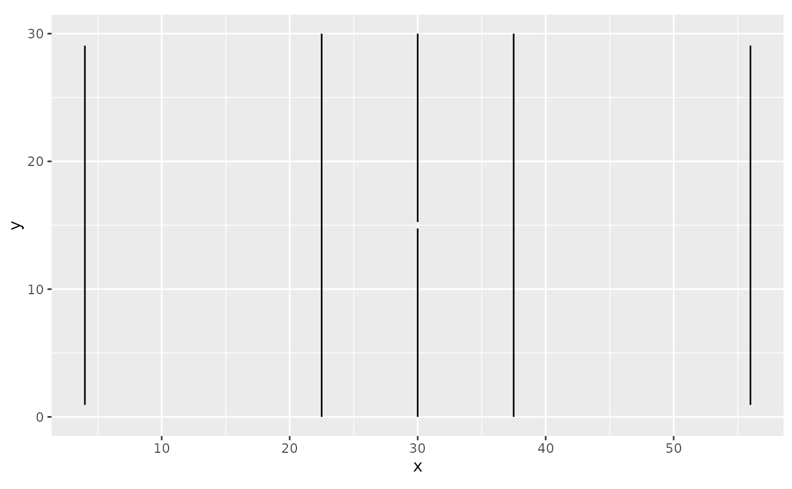

Returns every rink marking as tidy coordinates: one row per vertex, grouped by
shape. This is what annotate_rink() draws, exposed so you can reuse the
geometry elsewhere (another plotting library, an interactive map, a point-in-zone
test, ...). Markings are listed in drawing order (bottom to top).
Value
A data frame with columns:
shapeMarking name, e.g.
"centre_circle","blue_line_left".groupInteger id, unique per shape, in drawing order.
kind"polygon"(closed) or"path"(open line).x,yVertex coordinates, in the frame of
dimensions.colour,fillStyle roles:
"line"(the marking colour),"ice"(the rink fill colour),"slot"(the slot styling) orNA(none).linewidth"small","big","slot"orNA(the ggplot2 default).alphaFill alpha (
NAfor the slot, which takesslot_alphainannotate_rink()).linejoinLine-join style for the outline.
Examples
geo <- rink_geometry(IIHF)
unique(geo$shape)
#> [1] "ice" "centre_circle" "centre_dot"
#> [4] "faceoff_dot_lb" "faceoff_circle_lb" "faceoff_dot_lt"
#> [7] "faceoff_circle_lt" "faceoff_dot_rb" "faceoff_circle_rb"
#> [10] "faceoff_dot_rt" "faceoff_circle_rt" "nz_dot_lb"
#> [13] "nz_dot_lt" "nz_dot_rb" "nz_dot_rt"
#> [16] "goal_right" "goal_left" "centre_line_bottom"
#> [19] "centre_line_top" "blue_line_left" "blue_line_right"
#> [22] "goal_line_left" "goal_line_right" "crease_left_fill"
#> [25] "crease_left" "crease_right_fill" "crease_right"
#> [28] "boards"
# Draw it yourself
library(ggplot2)
ggplot(geo[geo$kind == "path", ], aes(x, y, group = group)) +
geom_path() +
coord_fixed()
